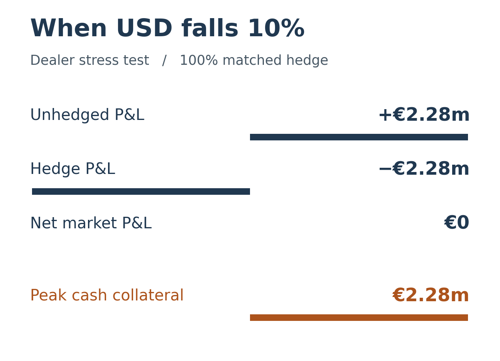

01 / The transaction: $40m still needs a hedge
This synthetic case follows a fictional EUR-based buyer acquiring a business for $100m. A $60m USD loan goes directly into escrow at closing, leaving $40m to buy with euros. Future USD debt service remains a separate currency exposure.
I compared a six-month FX forward with a USD call before closing, then a pay-fixed interest-rate swap with a cap on the $60m loan after closing, using Python and Excel. The question is which uncertainty each instrument removes—and which obligation it leaves behind.
The modeled forward locks the $40m payment at €36.434m. After closing, the swap produces a 5.5403% all-in borrowing rate, including the 150bp loan spread; the 5% cap limits the reset rate plus spread to 6.5%, before its premium. These are scenario outputs, not live quotes.
02 / If the acquisition is cancelled
Cancelling the acquisition does not cancel its derivative. At expiry, with USD worth €0.82, the forward still creates a €3.634m settlement cost even though there is no purchase payment to fund.
The call can expire unexercised. In this scenario, its cost is €1.028m including premium carry to closing. That flexibility has an upfront price; it is not a free hedge. A call that finishes in the money could instead retain value. For me, this is why deal certainty belongs in the hedge decision alongside the exchange-rate forecast.
03 / Zero net market P&L. €2.28m of collateral.
The dealer stress is a separate portfolio of two independent clients, not a second count of the acquisition. In the 100% matched-hedge scenario, a 10% fall in USD produces zero net market P&L but a €2.276m (about €2.28m) peak variation-margin requirement on the market hedges, before client cash arrives.


The model assumes uncollateralized clients, daily EUR-equivalent variation margin on market hedges, and no initial margin. The lesson I take from it is that offsetting valuation changes do not guarantee offsetting cash timing. Liquidity and counterparty risk still need separate attention.
Scope and checks. Independent synthetic case, with a hypothetical 2027 transaction timeline. The report and workbook document assumptions and limitations. The supplied reconciliation checks 144 cached workbook cells against Python; it is not a native Excel recalculation or trade-platform validation.